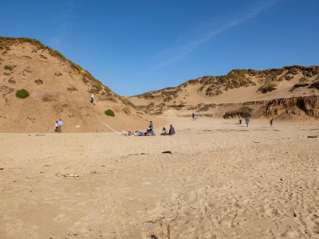
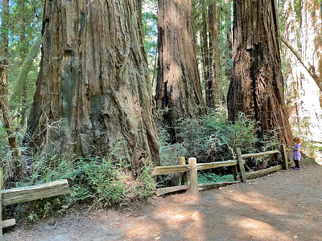
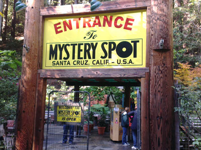

Monterey Bay Travel Guide
Bay of the Pacific Ocean, south of the San Francisco Bay Area and north of Big Sur, and includes the cities of Monterey, Carmel-by-the-Sea and Santa Cruz
Places to See in Monterey Bay
Carmel-by-the-Sea
Central California city along the Pacific Coast known for its natural scenery and rich artistic history

Fred Hsu on en.wikipedia, CC BY-SA 3.0, via Wikimedia Commons; Image Size Adjusted

Fort Ord Dunes State Park
Expansive coastal preserve featuring restored dunes, oceanfront trails, and remnants of a historic military base.
-400.jpg)
Bureau of Land Management, Public domain, via Wikimedia Commons; Image Size Adjusted
.jpg){kind=link}
Fort Ord National Monument
Former United States Army post on Monterey Bay of the Pacific Ocean coast

Marty Aligata, CC BY-SA 4.0, via Wikimedia Commons; Image Size Adjusted

Henry Cowell Redwoods State Park
State park, preserving mainly forest and riparian areas in the watershed of the San Lorenzo River, including a grove of old-growth coast redwood

Mission San Antonio de Padua
First Franciscan mission in The Californias is the fifth to stand on this location. The mission site is a National Historic Landmark

Amadscientist, CC BY-SA 3.0, via Wikimedia Commons; Image Size Adjusted

Monterey
City on California's Central Coast, founded in 1770, and until the 1950s was an abundant fishery, with present-day attractions including the Monterey Bay Aquarium, Cannery Row, and Fisherman's Wharf

Tshrinivasan, CC BY-SA 3.0, via Wikimedia Commons; Image Size Adjusted

Mystery Spot
Tourist attraction near Santa Cruz, where visitors experience demonstrations that appear to defy gravity

Jpatokal, CC BY-SA 3.0, via Wikimedia Commons; Image Size Adjusted

Roaring Camp
Narrow-gauge tourist railroad that starts from the Roaring Camp depot in Felton, California and runs up steep grades through redwood forests to the top of nearby Bear Mountain
Santa Cruz
Situated on the northern edge of Monterey Bay, Santa Cruz is a popular tourist destination, owing to its beaches, surf culture, and historic landmarks
Overview
Monterey Bay is a large Pacific bay south of the San Francisco Bay Area, stretching from Santa Cruz at its north end to Monterey and Carmel-by-the-Sea at its south. It is home to one of the world’s richest marine ecosystems, and visitors come to see the Monterey Bay Aquarium, watch whales, kayak among sea otters, and drive the dramatic coastline.
The area blends beach-town fun with refined seaside charm. Santa Cruz is known for its Beach Boardwalk and surf culture, Monterey for Cannery Row and its historic adobe buildings, and Carmel-by-the-Sea for storybook cottages, art galleries, and white-sand beaches. Pebble Beach and its 17-Mile Drive add world-famous golf and coastal scenery.
Geography
The bay is an open curve of the Pacific coast about 25 miles across. The Monterey Canyon, one of the largest underwater canyons in North America, starts just offshore at Moss Landing and drops thousands of feet. The Santa Cruz Mountains rise behind the north shore, the Monterey Peninsula forms the south side, and the fertile Salinas Valley, nicknamed the “Salad Bowl of the World,” opens at the head of the bay. Elkhorn Slough is one of California’s largest tidal wetlands.
History
The Ohlone and Esselen peoples lived along these shores before Juan Rodríguez Cabrillo sighted the bay in 1542 and Sebastián Vizcaíno named it in 1602. Spain founded the Presidio of Monterey and Mission San Carlos Borromeo (the Carmel Mission) in 1770 and 1771, and Monterey served as the capital of Spanish and Mexican California. The United States took the city in 1846, and California’s first constitutional convention met in Monterey’s Colton Hall in 1849. Sardine canneries later made Cannery Row famous, a story told in John Steinbeck’s novels, and the Monterey Bay National Marine Sanctuary was designated in 1992.
Cities and Towns
Monterey has Cannery Row, Fisherman’s Wharf, and the Monterey Bay Aquarium. Carmel-by-the-Sea is a village of cottages, galleries, and restaurants near the historic Carmel Mission. Pacific Grove is known for Victorian houses and its winter monarch butterfly sanctuary. To the north, Santa Cruz is a beach city with its Beach Boardwalk and surfing at Steamer Lane, and nearby Capitola is a colorful seaside village.
National Protected Areas
The Monterey Bay National Marine Sanctuary, among the largest national marine sanctuaries, protects the bay and its deep canyon, along with whales, sea otters, and kelp forests. Fort Ord National Monument, near Monterey, has more than 80 miles of hiking and biking trails through oak woodlands and chaparral. The California Coastal National Monument protects thousands of offshore rocks and islands along the coast.
State Parks and Historic Sites
Point Lobos State Natural Reserve near Carmel is often called the “crown jewel” of California’s state parks, with sea lions, otters, and cypress groves. Asilomar State Beach, Fort Ord Dunes State Park, and Elkhorn Slough Reserve offer beaches and wildlife viewing. In the Santa Cruz area, Natural Bridges State Beach and Henry Cowell Redwoods State Park preserve beaches, tide pools, and old-growth redwoods, and Monterey State Historic Park preserves the city’s adobe buildings.
Seasons and Best Time to Visit
The coast has a mild climate, but summer fog is common, especially in June and July, so many visitors consider September and October the warmest and clearest months. Gray whales pass the bay from December through April, and humpback and blue whales are often seen from spring through fall. Monarch butterflies cluster in Pacific Grove from October to February, and winter is the stormiest and quietest season. Summer is the busiest season for Santa Cruz’s beaches and boardwalk, while August brings the Pebble Beach Concours d’Elegance and September the Monterey Jazz Festival.
This article uses material from the Wikipedia article "Monterey Bay", which is released under the Creative Commons Attribution-Share-Alike License 3.0. Additional information is from the Monterey Bay National Marine Sanctuary, the Bureau of Land Management page for Fort Ord National Monument, and California State Parks.